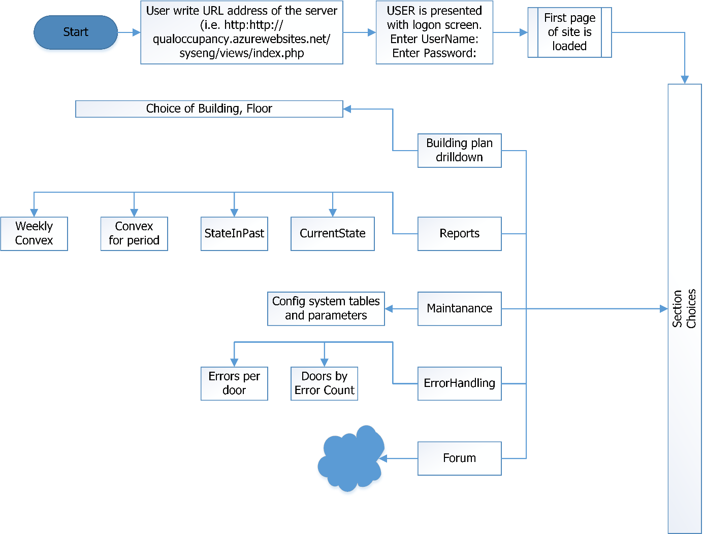
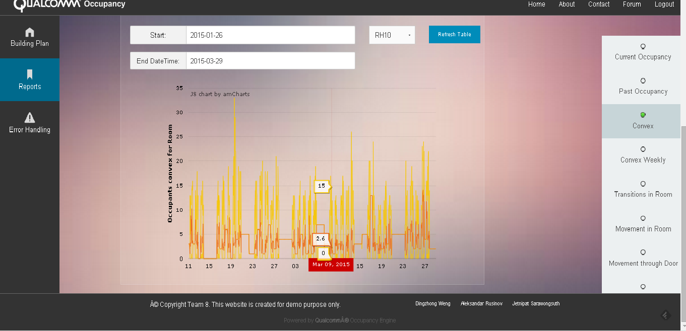

Product Overview
Occupancy information for present, past and prediction for future plays important roles in many areas: smart buildings, control and optimization of Heating system, ventilation system, air conditioning (HVAC), Smarter and efficient company organization; Access control optimization, accident prevention and many others.
The Qualcomm® Occupancy Engine is a cloud based system, intended to accurately quantify presence and movement of people in the rooms of a building based on a data sent from different sensors.
Main system features are:
- Format and logical validation, analysis and storing of all received data from different sensors
- Collected historical data is used for different queries and analyses – for example calculation of current and past occupancy and movements for room, door and building
- Calculating the confidence level of counted occupancy
- Error handling module that performs automatic checks and correct errors procedures.
- Pattern of occupancy at a room and building level is estimated using historical data
- Users communicate with the system through regular browser. User Interface has the following features:
- Consistent responsive design with login module and session support, help, contact information and forum section
- Building plan, showing online current room occupancy of the building and colour differentiated crowdedness
- Set of user parameterised tabular and graph reports
Making use of algorithms to analyze and estimate room occupancy in a building using sensor measurements from diverse sources and historical data. Information regarding occupancy levels and distribution patterns of movement in buildings may follow different patterns based on special events or times of the day. The room occupancy may vary seasonally, with time of the day or even days of the weeks and holidays. For example, a living room occupancy pattern is usually higher during the day than during the night.
Requiements Background
Тhe key requirements to our system are:
- To accurately quantify the number of people in each room of a building
- To calculate the confidence level of the number of people in every room
- To store a historical data for further analyses
- To create an error handling module with automatic checking and correction of the errors
- To have user interface, showing:
- Current and past number of people in every room
- Confidence level
- Set of different reports
We completed all functionality as planned in our PoC and created some additional features during the process of development. The development plan followed our PoC. We successfully finished all ‘must have’ and ‘should have’ features and partially ‘could have’ and ‘would like to have’, with the opportunity to complete them in future development .
| PRIORITIES | FEATURES | COMPLETED |
|---|---|---|
| MUST HAVE |
|
ALL DONE! |
| SHOULD HAVE |
|
ALL DONE! We also added an edditional functionality connected to the building plan database to show current number of people in every room. |
| COULD HAVE |
|
Calculated weekly convex shows occupancy pattern for every weekday and could be used as a base for occupancy prediction. |
| WOULD LIKE TO HAVE |
|
|
Video of Final Product
The following is our final product demo video. For detailed information about this system, please refer to our report.
Architectural Diagrams
System architecture overview
Figure 4-1 System overview schema
Our product is a cloud based system:
- Server side – Microsoft Azure cloud platform
- MySQL database server
- PHP scheduled modules to receive, store and process input data.
- Scheduled procedures for errors handling and convex calculation
- HTTP transfer to collect data send from an Arduino controlled sensors
User interface using foundation framework responsive design, HTML5, CSS, JavaScript Modules for:
- Initializing Java module - for set up, database creation, configuration and initial data loading in system parameter tables.
- Java Client side module - Simulator of sending data online from hardware sensors
- PHP module to create and load test samples of historical data
We use Github repository with version and source control from where the source code is deployed on Azure and local host staging environment for the product and its iterations.
Figure 4-2 Use cases for sensor events and data transfer
Figure 4-3 Use case for system configuration and user interaction
The Database schema
Figure 4-4 Database Entity-Relatonship schema
B42Snapshot stores the data that comes directly from the Arduino. It shows the transitions at a given door along with the confidence level, direction sign and timestamp of the event.
BuildingPlan lists all the doors in a building as well as their adjacent rooms. For this model we assume that a door is two sided. The transition is positive when it is from Room1 to Room2 and negative if it is from opposite direction.
CurrentState stores the number of people currently occupied a given room, along with a cumulative confidence level. This table is created to allow faster access to the current state of each room.
RoomOccupancy stores the past data for each room occupancy at a given moment. A parameter time interval is used, for example 1 day, 1 hour or 5 minutes depending on the people movement dynamic and the snapshot will be generated. This database will be updated during a period where there are no activities. For example, very late at night.
OccupancyLevels gives information about the crowdedness of each room. The values vary depending on the area of a room. The occupancy level is associated with a color. The values in Empty, Few, Several, Crowded present an upper bound for the level. Empty is always 0. For example if we have Few – 4, Several – 10, Crowded – 30, and we have green for Empty, yellow for Few, orange for several and red for Crowded and the system shows that there are 14 people in a room, it will have red label.
RoomParameters is a system table that specifies various characteristics about the rooms. For example, one can store HVAC (heating regulation and air-conditioning) conditions about every room. Since there systems use a lot of energy, a demand driven control will be essential in minimising the energy consumption. The value parameter represents the number of people that should be in the room for a certain activity to start. The dates show the period that this activity is valid.
CheckPresence stores the data that comes directly from the room sensors. It shows the presence (Yes/No) in a given room along with a device number, confidence and timestamp of measurement.
Check_WiFi stores the data that comes directly from the Wi-Fi sensors. It shows the number of devices in a given room along with a device number and timestamp of measurement. CorrectErr stores a correction transitions of error handling module. Structure and fields are same as of b42snapshot.
ForcedRules is a table that specifies max and min people limits for the room at agiven period of a given day of week, typeofday (working or holiday), and flag for forcing rule. This is used by scheduled error correction procedure to enforce sets limit.
ConvexDefinitions stores the parameters used in building and populating convex and convex_date tables. These parameters are ‘length in weeks in the past’ and ‘interval length to divide days (in seconds)’.
Convex_date stores calculated history of a room’s occupancy in the defined weeks in the past in the form of min, max, average values per intervals of a days.
Convex stores min, max and the average values of the room’s occupancy calculated per intervals of a weekday.
There are several helper views for facilitating queries and data processing procedures: roommovements, camera_occupants and lastroomoccupancy.
 Figure 4-5 System use diagram
Figure 4-6 Data from door sensors transfer diagram
Figure 4-7 Data from room sensors transfer diagram
Figure 4-8 Data from Wi-Fi sensors transfer diagram
Figure 4-9 Convex and weekly convex calculating
Figure 4-10 Process of error correction using predefined rules in forcedrules table
 Figure 4-11 Java Database initialisation Module
Figure 4-11 Java Database initialisation Module
Figure 4-12 Java Simulator Module
Development Plan, Iterations and Forks in Prototypes
-
Plan introduction and overview
-
Purpose, scope, and objectives
This Software Development Plan (SDP) establishes the plan for software building, testing, and deployment of the Qualcomm Occupancy Engine System (QOE). The QOE is being developed under the supervision of the Computer Science Department of UCL and under close contact with Qualcomm as a client. Updates to this SDP will address future QOE software upgrades.
-
System overview, including system and software architecture
In general, an Open source software approach is used including a description of the code, its specific origin, how it is controlled, how it is tested or analyzed.
The Qualcomm Occupancy Engine System involves the development and server deployment of the software modules of web based system:
- Server side – Microsoft Azure cloud platform
- MySQL database server
- PHP scheduled modules to receive, store and process input data.
- Scheduled procedures for errors handling and convex calculation
- HTTP transfer to collect data send from an Arduino controlled sensors
User interface using foundation framework responsive design, HTML5, CSS, and JavaScript.
Modules for:
- Initializing SQL database module with Java and JSON files - for set up, database creation, configuration and initial data loading in system parameter tables.
- Java Client side module - Simulator of sending data online from hardware sensors
- PHP module to create and load test samples of historical data
Qualcomm Occupancy Engine System is encapsulated and can be easily deployed on different platforms – cloud, Linux/Windows/Mac OS with different WEB servers/Relational Database management systems.
-
System requirements
The project requirements are described in Chapter 3
-
-
Project team members resources breakdown by responsibility (management, software engineering, testing etc.)
Primary Role Secondary Role Tertiary Role Aleksandar Rusinov Team leader: Manages the delegation of the work in accordance to the skills of the team members. Responsible for group meetings and meeting deadlines. Client and Supervisor liaison: Chief Client and Supervisor liaison, Makes connection with the client and the UCL supervisors and informs the team members of any changes. Main developer and product manager: In charge of the software development and product management. Main coder and module builder. Designs how the system should act, what simulators should be done and gives ideas how to make the product more attractive.  Dingzhong Weng
Dingzhong Weng
Head of Visual and webpage: Has created the webpage of the project and also made the UML diagrams. Minutes and Report Redaction: Vice Report manager. Has to deal and proof check reports and meetings when the head reporter is absent. Client Liaison: Vice client and UCL supervisor liaison. Connects with client, UCL supervisor and third party advisor when the chief Liaison is absent  Jetnipat Sarawongsuth
Jetnipat Sarawongsuth
Chief Editor: Looks after all reports, minutes of meetings and documentation. Reviews the reports and makes redaction. Head of Research: Looking after all the researches. Studing different products, communication devices and way of connection with the arduino. Testing: Provides means of testing. Gives solutions for simulator tests and code testing coverage.
-
Development (internal) processes, procedures, and work instructions
The QOE Project apply an Incremental (Preplanned Product Improvement) strategy with iterations loops to develop and evolve the functional capabilities of the system. The releases of development are created and applied to the GitHub repository and feedback is incorporated in next releases.
-
Plans for performing general software development activities
Figure 5-1 Development Process Activities diagram
-
Software development processes
The Incremental Life Cycle Model has been used to guide the content and format developing the SDP. The allocation of functional requirements for each build was negotiated with the client (Qualcomm) on weekly meetings and documented in the GitHub repository for each build. The SDP integrates reusable software from existing sources with newly-developed software. Software design and coding was performed using an object oriented design approach and generate class and object process interaction diagrams. Artifacts of software development activities was deposited into GitHub repository.
The Test Plan (TP) cases had been prepared and executed as described in the Chapter 9. Software errors uncovered during tests were had been addressed, providing analysis and repair as required.
-
Software types/categories (i.e., operational software, test software
Development environment consists of local desktop/laptop with installed WEB server (with PHP interpreter – i.e. Apache)/MySql database, Java development environment (i.e. Eclipse), internet access (to pull/push artefacts in GitHub repository), source editors and document editing software (i.e. MS Office).
Production environment is Microsoft Azure cloud platform.
For test environment, we use desktop/laptop with internet connection, standard browser (i.e. IE, Chrome, Mozilla latest version), installed PHP interpreter for Use case tests and Java runtime for the Simulator of sensor data.
-
Plans for performing detailed software development activities
-
Software Development Planning
The plan for all software development follows software engineering ‘best’ practices. Microsoft Project was used to develop and maintain the QOE Project master plan and schedule. The Project leader had used weekly project meetings to maintain the status of the software project and to resolve any conflicts or changes that might occur.
-
System Test Planning
The intent of system test planning is to validate that the system meets its performance requirements. It is the responsibility of the Test Manager to direct the development of system test plans and procedures, and conduct the system tests. Testing is performed to validate each component's ability to meet its stated requirements and to ensure interoperability of the major software components. System qualification testing is prepared to demonstrate to the client that system requirements have been met. It covers the system requirements agreed and written in the system requirements part.
-
-
Software configuration management
We have created script procedures for setting Azure environment, transferring system from GitHub repository and calling modules for the initial database creation and loading. Fully automatic installation and configuration is not provided in this release. Depending on target server system, different procedures are to be created in next releases.
-
Other software development activities
Here is technical and management approach to coordinating and providing oversight of software development activities undertaken by the QOE Project. Timely technical and management oversight at the appropriate level is necessary to accomplish the activities listed below:
- Track progress against plans
- Identify and resolve problems
- Activities and relationships associated with planning and conducting integration
Here is to be addressed other related development actions and schedules that could impact QOE Project.
-
Iterations made in the project development
PHASE ITERATION DESCRIPTION ISSUES AND RISK ADDRESSED Requirement Phase R1 Defines initial product requirements and Software Development Plan Develops initial requirements documents for review R2 Defines product requirements and Software Development Plan Develops realistic Software Development Plans and scope Design phase D1 Complete analysis and design for major use cases. Complete initial design of architecture Architecture can be reviewed.
High-risk use cases can be reviewedD2 Complete analysis and design for all use cases. Complete prototype of architecture Architectural issues clarified
Technical risks minimizedSoftware development phase S1 Implement skeleton of architecture Architecture available for implementors S2 Implement and test high- risk use cases High-risk use cases are implemented S3 – Develop Alpha release Implement and test low- risk use cases. Complete unit/procedure testing Defects minimized System testing and deployment phase T1 System qualification testing and configuration/ deployment to production site Qualcomm Occupancy Engine final product was released
Techncal Achievements, Implementation Details, Use of Design Patterns
- The Occupancy Engine system receives data sent from different sensors (door sensors, infrared room devices, Wi-Fi devices) using post method in http protocol. After format and logical validation all received data is stored in the database. Process diagrams are shown on Figure 4-6, Figure 4-7 and Fig 4-8.
- Quantify the number of people in each room of a selected building, after each transition based on the information coming from different sensors.
- Calculation of the confidence level of the number of people in every room, based on the confidence, received from the door sensors. The idea is that the combined confidence level for a room is calculated by using all the confidence levels from each of the doors. We calculate this apriori confidence for the particular room using confidence for all doors which are connected to this room with the following formula: number of people who moved through particular door (in both directions) multiplied by the confidence for this door. This is summed for all doors that are connected to the particular room and finally divided by the number of all peoples moved in both directions through these doors. Thus we receive the confidence level for the given room. This is the apriori confidence for the room. When enough historical data is collected, the system can calculate the confidence level for a room using the historical data stored in the system and making the automatic corrections, made from the system for the doors, connected to the same room.
- Error Handling Module - according to our client requirements, the system needs to be able to make automatic correction of the errors with very minimal human interactions.
- The error checking and correction procedures are executed after every transmission of the data to ensure that any errors or inconsistencies are identified and taken care of right away. After checking the received data, the system automatically makes all necessary error corrections. For example, if the current-state table says that there is negative number of people in the room, the system will make an automatic correction and the negative value will not be stored in the current-state table. However, this does not mean that these inconsistencies and errors are not recorded. They will be recorded in as a historical data that we can use for further analysis. All corrections that are automatically corrected by the system will also be stored in the error corrections log, that way we should gather statistics for the errors and the system could use this data later to update the confidence level automatically if the errors reoccur.
- Another checking procedure is scheduled at pre-set time at night. On the base of information from door sensors and room devices. This procedure checks and compares occupancy in the rooms with the pre-defined set of rules. Using these rules, the system will be able to determine any unusual activities in a room and correct them, tracing back to the entrance/exit of the building using breath first search algorithm and tracking back the transitions from that room all the way to the entrance using calculating path. Later on, when there are enough data for analyses, the system can then create its own set of rules. The system will make an automatic correction by doing a breath first search and tracking back the transitions from that room all the way to the entrance. The process flow diagram is shown on Figure 4-10.
- Checking procedure for errors comparing the room sensor data and the door sensors data – making corrections where certain inconsistencies are found.
- User define set of rules (model) which program to follow when checking for errors, to determine whether or not an error needs to be corrected and how it should be corrected. We decided to create rules for the maximum number of people that could be in a certain room at a certain time of the day. These numbers are currently predefined for each room in each building. Later on, the system could create its own set of rules on the base of historical data.
- All automatic error corrections, made by the system, are stored in the correct error log table.

- The room occupancy pattern – the occupancy convex procedure is used to find the pattern of the room occupancy - people presence in each room at certain time intervals. We calculate the minimum, maximum and the average (mean) number of people in each room at a certain period of time (parameter) based on data for 10 weeks(also parameter). Results are stored in a table and may be used for a smart error correction and reports base. Process of convex calculation is shown on Figure 4-9.
- Responsive design User interface with:
- Building plan displays the real time data from the database – current number of people in every room of the building
- Reports for:
- Analyses based on the historical data - current and past occupancy along with presence confidence level, with possibility for the user to select room, door, past period time interval.
- Reports for occupancy (pattern) convex
 Convex- occupancy pattern of presence for a past period
 Occupancy pattern for day of week. Graphical report allows drill down for periods.
Occupancy pattern for day of week. Graphical report allows drill down for periods. - Java simulator for sending online data from hardware sensors. Door sensors simulator, generates random transitions through different doors in a building. The data, generated from the simulator, is sent to the database and stored in there just the same way as the real sensors would do.
- PHP module to create and load test samples of historical data.
Management of the Project Including Work Packages Completed Between the Team Members.
-
Requirements Management Plan
Weekly meetings with client to report the progress and to obtain feedback and comments.
-
Schedule Control Plan
Team leader has maintained a summary schedule showing the expected date of each milestone. After every team’s meetings, the team leader re-evaluated the progress of the project to determine whether or not the project is on schedule. If the project was not on schedule, the team leader made consultation with team members to get the project back on track. This resulted in updating the schedule and/or re-evaluating the certain functionalities of the system.
-
Management plan
-
Work packages
N# TASKS STAGE DESCRIPTION ASSIGNEE Module 1 – Data initialization 1.1 Initializing Java module - for set up, database creation, configuration and initial data loading in system parameter tables. Finished and successfully tested. Loaded in GitHub repository. Eclipse java project with clear packaged content involving Google Guava libraries, WindowBuilder, Java swing, Junit and MySQL connector Aleksandar Rusinov 1.2 Java Client side module - Simulator of sending data online from hardware sensors Finished and successfully tested. Loaded in GitHub repository. Eclipse java project using JSON
simple and Java net.
OccupancyStatus.java-API class
Simulator.java-simulator core
Triple – utility class
Junit test sectionAleksandar Rusinov 1.3 PHP module to create and load test samples of historical data, to populate tables with correct and consistent data. Finished and successfully tested. Loaded in GitHub repository. fill_csv_file.php
t_createroomocc.phpAleksandar Rusinov Module 2 – Data gathering and maintenance 2.1 PHP modules to receive and process data from hardware sensors (door, room and WiFi sensors) using HTTP protocol and post/get methods. Format and logical validation of input data. Finished and successfully tested. Loaded in GitHub repository. add_data.php
add_data_array.php
add_data_rooms.php
add_data_rooms_array.php
add_data_wifi.php
add_data_wifi_array.phpAleksandar Rusinov 2.2 Procedure for checking and automatic error corrections, updating currentstate table, and in case of error insert correction record into error_correction log table Finished and successfully tested. Updatecurrentstate
SQL stored procedure executed after every transmission of dataAeksandar Rusinov Module 3 – Procedures and Functions for occupancy calculation 3.1 Scheduled procedure to store room occupancy snapshots on a predefined intervals Finished and successfully tested. Loaded in GitHub repository. store_currentstate.php Aleksandar Rusinov 3.2 Queries, views, procedures, functions calculating presence and movement for rooms and doors for current and past period Finished and successfully tested. Loaded in GitHub repository get_convex.php
get_currentstate.php
get_currentstate_inpast.php
get_doors.php
get_history_door.php
get_history_door_usage.php
get_history_room.php
get_history_room_usage.php
get_occ.php get_rooms.phpAleksandar Rusinov, Dingzhong Weng 3.3 Calculate convex occupancy for pre- define past period and time intervals Finished and successfully tested. Loaded in GitHub repository fill_convex.php Aleksandar Rusinov Module 4 – UI and Reports module 4.1 Building Plan with real time updates and Occupancy levels Done, tested and implemented Shockwave flash building plan done with Action Script that interacts with the server API and Shows the current state of the occupancy in the Building Dingzhong Weng 4.2 Applying Responsive Design to the UI Done and implemented Using the new Fondations Framework in the web site layout Dingzhong Weng 4.3 Usage of Ajax with JavaScript to fetch and display data Done report.js  Dingzhong Weng 4.4 Site structure Done and implemented, tested menus and layout Dir structure
assets
fonts
forum
include
layout
lib
resources
views Dingzhong Weng Module 5 – Error handling module 5.1 Error handling module reports Finished and successfully tested. Loaded in GitHub repository errorhandling.php
report_errors_alldoors.php
report_errors_period.php
get_history_errors_door.php
get_history_error_door_usage.phpAleksandar Rusinov 5.2 Scheduled procedure for automatic error checking and correction Finished and successfully tested. Loaded in GitHub repository checkrules.php
drag_occupants.phpAleksandar Rusinov Module 6 - Testing 6.1 Engine testing with real data from Arduino sensors completed Testings during lab sessions and during trials made by the hardware team Jetnipat Sarawongsuth 6.2 Tests on the base of this emulation: tested error handling module, convex calculation procedure, queries and reports. completed Loaded data for past 10 weeks period, simulating real movement in an office building (about 15000 records in snapshot)
Using PHP module for loading of historical data (fill_csv_file.php t_createroomocc.php)Jetnipat Sarawongsuth 6.3 Tests with online simulator - building plan and reports completed Simulator of sending data online from hardware sensors Jetnipat Sarawongsuth 6.4 Java Testing completed Implemented Junit tests in the Java modules Aleksandar Rusinov 6.5 Tests following predefined use cases, sending data from csv files and using real http transfer mechanism completed Test_simulator.php
Test_simulator_rooms.php
Test_simulator_wifi.phpJetnipat Sarawongsuth Module 7 - Documentation 7.1 Documentation completed Main Project Documentation
Bi- weekly reports
Test cases documentation
User Manual
System ManualJetnipat Sarawongsuth Aleksandar Rusinov -
Configuration Management Plan
Configuration Management for software artifacts is handled using GitHub repository with version and source control to provide environment for team collaboration. From GitHub repository iterations of product is deployed on Azure and local host staging environment.
-
Testing and Quality Assurance Plan
All deliverables have gone through the appropriate review process. The review is required to ensure that each deliverable is of acceptable quality going through unit and integration tests and control. Appropriate test cases were elaborated and executed.
Referenced Materials Cited And Examples/Trails Made
Testing and Evaluation of the Producton Solution
- We successfully tested with the hardware devices.
- We also made tests following predefined use cases, sending data from csv files and using real http transfer mechanism.
- We made PHP module for loading of historical data for past 10 weeks period, simulating real movement in an office building (about 15000 records in snapshot) to test system performance. On the base of this emulation we tested error handling module, convex calculation procedure, queries and reports.
- We also made online Java simulator to send data from different rooms of a building for testing, evaluation and demo purposes.
Tests from hardware sensors
Test 1.2 Test from room sensors

For our detailed list of predefined test cases, please refer to our report at page 35.
SDK/Collaboration Opportunities for Further Development
The first step is to build an inference machine for machine learning and occupancy prediction (i.e. based on neural network) consuming information from sensors, historical data for the building, correct errors history, a penalty function – based on initial predefined rules and extrapolated from room and Wi-Fi sensors along with error correcting data. To select a suitable approach, historic data might be analysed by “of-the-shelf” workbench for data analysis, data mining, computer learning and predictive modelling – for instance WEKA, ELKI, RapidMiner - just to mention some of available free open source platforms. The second step is to ensure that we have reliable results in an appropriate response time in case of big buildings and huge amount of historical data - by applying scalable decentralized algorithms and/or parallel computing. Here choice of model and platform depends of volume and dynamic of data – Apache Hadoop  family of products look like good first choice for establishing  environment to start with.
System Manual and User Manual
Download system manual here: systemmanual.pdf.
Download user manual here: usermanual.pdf.
Community Forum
Our forum is here: Qualcomm Occupancy Engine Forum.